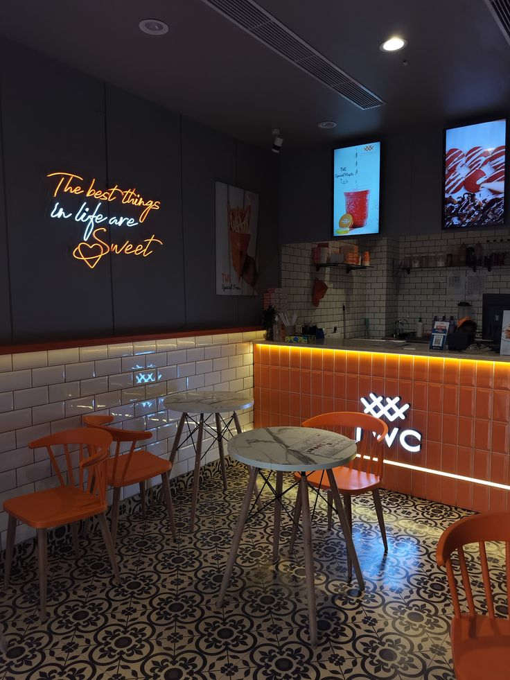

Popular
Popular
Smoky Jollof Rice
₦4,500Nigerian jollof rice served with seasoned grilled chicken and sweet fried plantain.
View mealFreshly prepared every day
Enjoy delicious Nigerian meals prepared with quality ingredients for dining, pickup or delivery.
Customer favourites
Explore some of our most popular dishes, prepared fresh and served with the familiar flavours you love.
Popular
Nigerian jollof rice served with seasoned grilled chicken and sweet fried plantain.
View meal Fresh
Fresh
Colourful fried rice prepared with fresh vegetables and served with delicious seasoned chicken.
View meal Local favourite
Local favourite
Rich egusi soup prepared with vegetables and assorted meat, served with your preferred swallow.
View mealSimple and convenient
Getting your favourite Savory Bites meal is easy. Follow these three simple steps.
Browse our menu and select from our range of freshly prepared Nigerian dishes.
Browse the menuContact us with your meal selection and tell us whether you prefer pickup or delivery.
Contact usCollect your freshly prepared order or have it delivered to your preferred location.
View our location
Why Savory Bites?
From the ingredients we select to the way we welcome every customer, we are committed to making each dining experience enjoyable and memorable.
We carefully select quality ingredients for every meal we prepare.
Our dishes celebrate familiar Nigerian flavours and carefully prepared recipes.
Our team welcomes every guest with attentive and friendly service.
We provide a comfortable and well-maintained space where customers can relax.
Ready for something delicious?
Explore our selection of freshly prepared Nigerian dishes or contact our team to plan your visit, pickup or delivery.